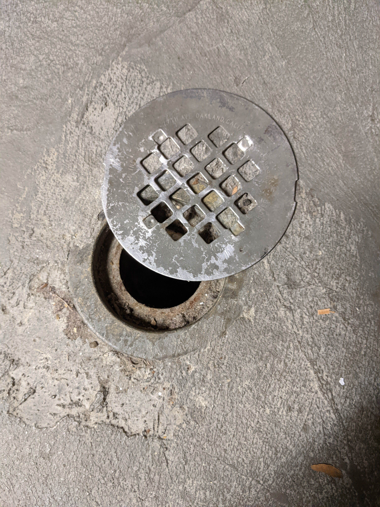
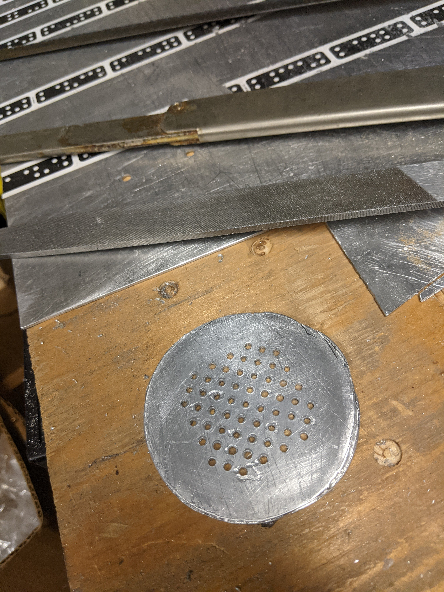
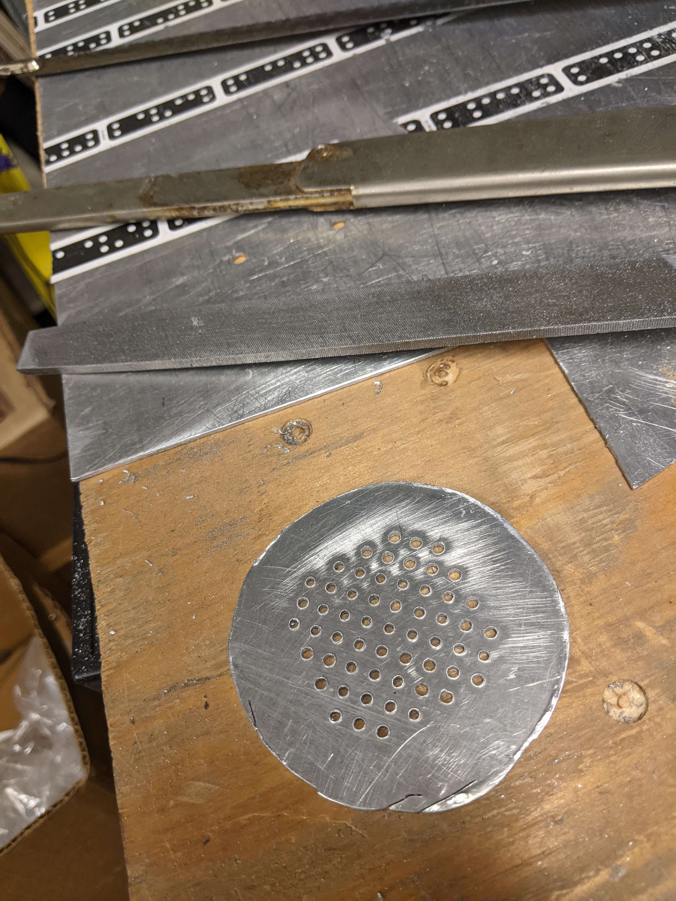
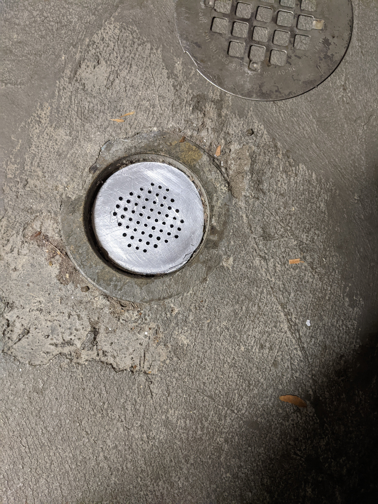

The floor of my laundry room is a poured concrete slab. There is a drain hole in case the clothes washer leaks. The drain hole is meant to have a metal cover, but that cover doesn't stay in place. The absence of a cover allows large objects to fall into the drain.
I want to design a new grate that will stay in place.
When I have a precise geometry in mind, I'd rather describe it in code than using a graphical user interface.
Most of my previous designs for Shaper Origin were done using JavaScript to dynamically generate SVG code to a web page that renders the SVG and allows me to copy it to a file. This approach was cumbersome though since I would need to edit the JavaScript code and reload the web page for each debug iteration.
This is my second Shaper Origin design that is based on a Pluto Notebook and Julia, insteead of JavaScript. I'm still experimenting with this approach, but, so far, I'm happy with it,
You can interact with the notebook on binder . Warning: It takes severalminutes for the notebook to start up.
Here's the finished design
My plan was to use Shaper Origin to drill all of the holes and cut the outline. I had a lot of trouble cutting though. Maybe this was due to the $2.00 per pound junk yard aluminum sheet that seemed particularly gummy, or the 5 for $10.99 1/16 inch end mill bits from Amazon that left more metal as burrs than as chips.
The aluminup sheet was 0.06 inch thick, clamped to a plywood spoilboard. I cut the holes using "auto" mode, stepping the depth by 0.02, 0.02 and 0.03 inch. I had to frequently break to sand off the burrs that were dragging against Shaper Origin's base.
Cutting the perimeter was a lot harder. Once again I used an initial depth of 0.02 inch. Once again I needed to take frequent breaks (every half inch to an inch) to sand off burrs. I managed to complete a second pass at a depth of 0.04 inch. I had a lot of trouble with the third pass though, with the Shaper Origin frequently retracting the spindle and displaying an error message that I was unable to read because the text was too faint and disappeared too soon.
Several times during the whole process I changed the end mill bit because the flutes were clogging.
I finished cutting the perimeter using a hack saw and file.
 Though this project took more work than I expected, I'm satisfied with the result.
